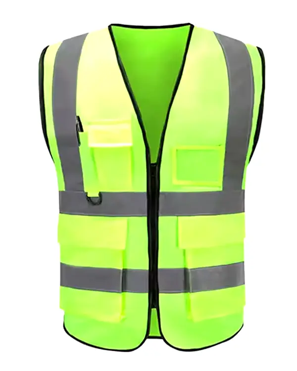
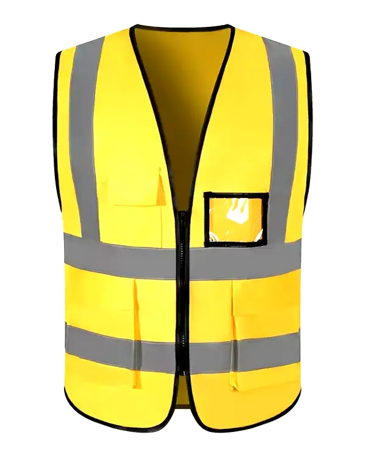
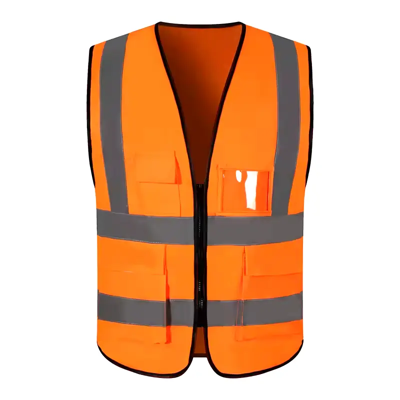

Rompi safety hi-vis (high-visibility) adalah Alat Pelindung Diri (APD) yang wajib digunakan di hampir semua area kerja berbahaya — konstruksi jalan, pergudangan dengan forklift, kawasan industri, pelabuhan, dan pertambangan. Di Tangerang dan kawasan industri Banten, kebutuhan rompi safety terus meningkat seiring pertumbuhan sektor logistik dan manufaktur.

Rompi safety hi-vis dengan reflective tape — standar K3 untuk kawasan industri dan konstruksi
Berdasarkan data kecelakaan kerja, sebagian besar insiden tertabrak kendaraan atau alat berat terjadi karena pekerja tidak terlihat — terutama dalam kondisi pencahayaan rendah, kabut, atau di area dengan lalu lintas kendaraan berat. Rompi hi-vis dengan reflective tape memantulkan cahaya lampu kendaraan dan meningkatkan visibilitas pekerja hingga jarak 300 meter.
Peraturan Menteri Tenaga Kerja dan regulasi K3 mewajibkan penggunaan APD termasuk rompi hi-vis di berbagai lingkungan kerja berisiko. Pelanggaran kewajiban ini bisa berujung pada sanksi bagi perusahaan dan tanggung jawab hukum saat terjadi kecelakaan.
Terbuat dari bahan polyester mesh yang ringan dan berventilasi. Paling umum digunakan untuk pekerjaan outdoor di siang hari. Tersedia dengan atau tanpa saku, serta pilihan kancing/zipper.
Rompi dari bahan polyester padat yang lebih tebal dan tahan lama. Lebih cocok untuk lingkungan dengan risiko abrasi atau kondisi cuaca buruk.
Dirancang untuk petugas lapangan yang butuh menyimpan alat kecil, dokumen, atau radio. Memiliki 4–8 saku dengan ukuran berbeda.
Pakaian kerja lengkap dengan panel reflektif terintegrasi — bukan sekadar rompi yang dipakai di atas baju. Memberikan perlindungan lebih komprehensif untuk pekerja konstruksi berat.


Berbagai jenis rompi safety hi-vis untuk kebutuhan industri dan konstruksi
Custom logo, berbagai warna hi-vis, MOQ mulai 30 pcs. Pengiriman kawasan industri Tangerang.
Rompi safety yang memenuhi standar K3 harus memenuhi kriteria berikut:
Tips Procurement: Saat membeli rompi safety dalam jumlah besar, minta supplier menunjukkan sertifikasi atau hasil uji laboratorium bahan reflektif. Reflective tape murahan yang terkelupas setelah 5x cuci adalah pemborosan anggaran dan risiko K3.
| Jenis Rompi | Bahan | Harga/Pcs | MOQ |
|---|---|---|---|
| Safety Vest Mesh Standar | Polyester Mesh | Rp 45.000–75.000 | 30 pcs |
| Safety Vest Solid | Polyester Solid | Rp 65.000–120.000 | 30 pcs |
| Rompi Safety Multi-Saku | Oxford Polyester | Rp 85.000–150.000 | 30 pcs |
| Rompi + Bordir Logo | Polyester + Bordir | Rp 75.000–145.000 | 30 pcs |
| Wearpack Reflektif Full | Cotton Drill + Tape | Rp 175.000–320.000 | 30 pcs |
Butuh supplier rompi safety hi-vis di Tangerang yang bisa diandalkan? Kunjungi halaman layanan kami di Konveksi Seragam Tangerang atau langsung hubungi tim kami.
Bordir logo, warna hi-vis, reflective tape K3 — siap kirim ke kawasan industri Anda.